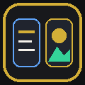

Open-Source Ambient Countertop Dashboard for Android Tablets (com.nernal.frame.oauth)
Onnkiosk transforms Android landscape tablets into a calm, high-contrast kitchen and living room information display. It connects directly from your device to Google APIs over HTTPS with zero intermediate servers or third-party tracking.
Displays your upcoming Next Event strip alongside synchronized Itinerary, 3-Day, Week, and Month views using the calendar scope.
Renders touch-friendly household task checklists and dedicated shopping tabs where family members can check off items directly on the counter.
Optionally displays photos explicitly chosen through the privacy-preserving Google Photos Picker, or hides photos completely in Calendar Primary mode.
Shows local conditions, multi-day forecasts, and interactive RainViewer radar tile animations with zero account tracking.
Onnkiosk stores all OAuth 2.0 tokens and offline display caches exclusively on your local Android device. No user data is transmitted to developer-controlled servers. Onnkiosk's use and transfer to any other app of information received from Google APIs adheres to the Google API Services User Data Policy, including the Limited Use requirements.